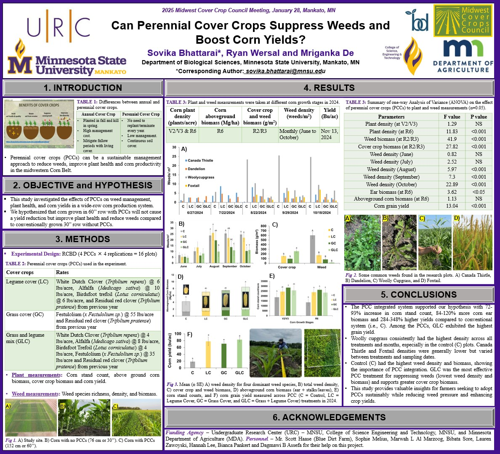

Name: Sovika Bhattarai
Education: Masters in Biological Sciences
(Expected Graduation: December 2025)
Bachelors of Science in Agriculture (Graduated: May 2023)
Email: sovika.bhattarai@mnsu.edu
About me
I am Sovika Bhattarai, a passionate researcher and graduate student pursuing a Master of Science in Biology at Minnesota State University, Mankato. With a background in agriculture, I earned my Bachelor of Science from Amritsar Group of Colleges, India, where I developed a strong interest in sustainable farming practices and soil health research. My research focuses on improving soil and plant health through innovative agricultural techniques. Currently, I am working on a study evaluating the effects of perennial cover crops and turkey integration on maize production and soil quality. I have also conducted research on the impact of mulching and vermicompost on crop productivity, gaining hands-on experience in experimental design, data analysis, and fieldwork. In addition to my research, I serve as a Graduate Teaching Assistant in the Department of Biology, where I conduct lab classes, grade assignments, and support undergraduate students in their learning. My technical skills include proficiency in R-Studio, statistical tools for agricultural research, and laboratory analysis techniques. With a keen interest in sustainable agriculture and data-driven solutions, I am eager to contribute to research that enhances crop productivity and environmental sustainability.
Evaluating Soil and Plant Health in a Wide-row Maize (Zea mays L.) Production System Integrated with Perennial Cover Crop and Turkey.
• Researching along with a faculty member to see the effect of perennial cover and turkey in Maize and soil health.
• Collecting the data from the field and evaluation them in the data analysis software such as MS Excel and R- Studio.
•Working together with the faculty members, farmer, fellow graduate researchers, and undergraduate students to make sure the research goes smoothly.
Effect of Four Different Types of Vermicomposts on Okra Productivity and Farm Income
• Conducted a greenhouse-based study using a complete block design on Okra to check the effectivity of four different Vermicomposts with different moisture content.
• Collected data on the plant and soil parameter and presented the findings on the paper.
Effect of Different Mulching Materials on Leaf Spot Disease of Groundnut
• Conducted field-based research to investigate the impact of mulch on groundnut production
• Designed experiment as randomized complete block with seven treatments and three replications, applying a fertilizer dose of 20:40:20 NPK kg per hectare.
• Evaluated the disease scoring for leaf spot disease on Groundnut and presented the findings in the paper.
Effect of mulch on yield of groundnut (Arachis hypogaea) in Nepal
• Conducted a field-based study using a randomized complete block design with seven mulching treatments and three replications.
• Applied fertilizer dose and collected data on pod yield, weed biomass, number of pods per plant, and benefit-cost ratio for each treatment.
• Analyzed results to identify the most effective mulching material for increasing groundnut productivity, with rice husk mulch showing the highest yield and benefit-cost ration.
Work Experiences
Graduate Teaching Assistance , Department of Biology, MNSU
• Conduct lab classes for undergraduate students in the Department of Biology, ensuring a hands-on learning experience and reinforcing theoretical concepts through practical application.
• Grade assignments and lab reports, providing detailed feedback to help students understand their mistakes and improve their performance.
• Offer assistance and support to students during office hours and emails addressing their questions and concerns and helping them grasp complex biological concepts.
Research Intern , National Soil Science Research Centre, Kathmandu